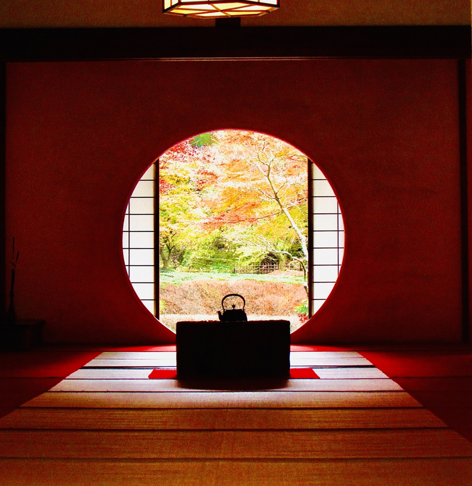
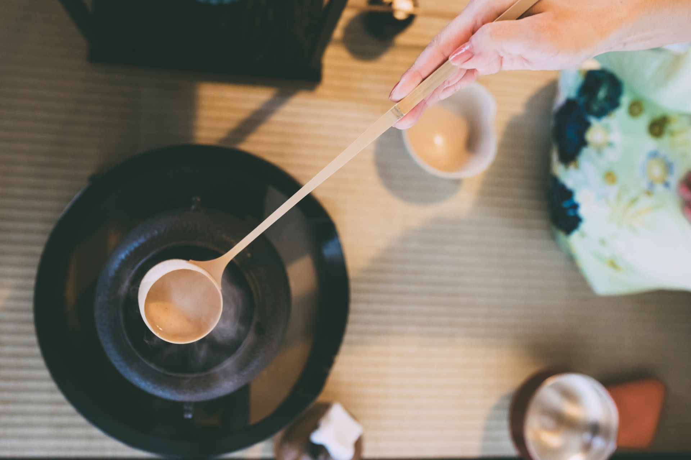
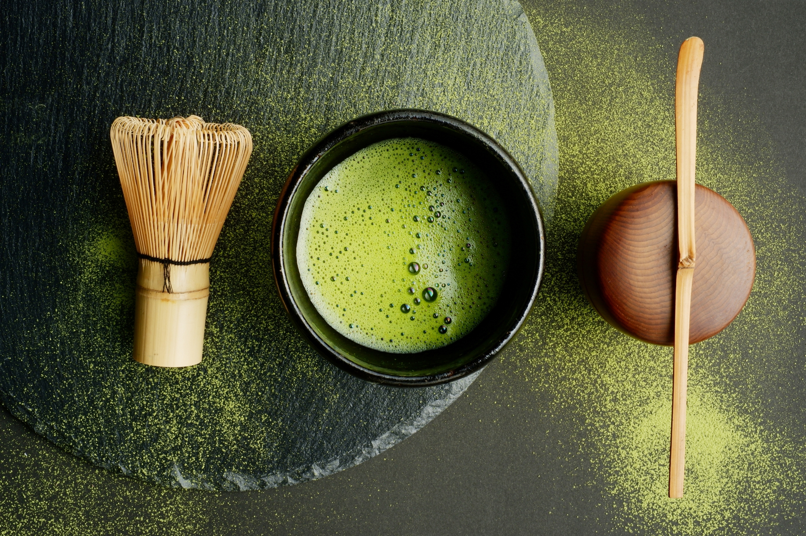

日本茶道—文化與歷史
日本茶道（茶の湯）不僅是一種品茶的儀式，更是一門融合哲學、美學與禮儀的生活藝術。透過一盞茶，人們得以沉澱心靈，感受自然，並展現對待客之道的極致敬意。
日本茶道（茶の湯）不僅是一種品茶的儀式，更是一門融合哲學、美學與禮儀的生活藝術。透過一盞茶，人們得以沉澱心靈，感受自然，並展現對待客之道的極致敬意。


日本茶道（茶の湯）不僅是一種品茶的儀式，更是一門融合哲學、美學與禮儀的生活藝術。透過一盞茶，人們得以沉澱心靈，感受自然，並展現對待客之道的極致敬意。
日本茶道的起源可追溯至中國唐宋時期。唐朝時，日本遣唐使將飲茶文化帶回，使茶逐漸融入貴族與僧侶的生活中。至宋代，抹茶文化興盛，日本僧人赴中國習得點茶法（即將抹茶粉與熱水攪拌起泡後飲用），對後來的茶道發展影響深遠。
到了十六世紀，被後世稱為「茶聖」的千利休（1522-1591）將茶道發揚光大，確立「和、敬、清、寂」四大理念，強調茶道的精神境界。他所推崇的「侘寂」美學，更提倡樸素與自然之美，使茶道成為日本文化的重要象徵。
千利休所倡導的「和、敬、清、寂」四大精神，至今仍是茶道的核心喔~
與人和睦相處，追求內心的平靜與平衡。
尊重他人，展現謙遜與禮儀。
保持環境與心境的純淨清澈。
體悟禪的寂靜之美，修習內心的安定。
日本茶道流派眾多，其中最具代表性的是由千利休的後人所創立的「三千家」：包含裏千家、表千家及武者小路千家。儘管三家同宗於千利休，但在抹茶的沖泡技巧、茶具選用及品茶禮儀上，各自呈現出細膩而獨特的差異。
其中，裏千家是目前流傳最廣的茶道流派之一，因其茶湯風格溫和親切，特別適合初學者及大眾。
裏千家著重細緻的點茶技巧，使薄茶湯面呈現豐盈細緻、綿密如絲的泡沫，層次豐富且細緻，賦予品茗者視覺與味覺上的至高享受。
裏千家茶道的動作細膩優雅且富有靈動性，行雲流水般流暢，展現茶道藝術之美。
裏千家提供豐富多元且富有深度的學習課程，讓學員能充分領略茶道的深遠內涵與多樣魅力，深受茶道人士的認同與喜愛。
裏千家樂於融合傳統與現代，並接受不同文化的器物，展現茶道的國際化視野，適合全球各地的茶道愛好者。
大家可能會以為茶道就是好好的打一服茶招待客人，但其實在每個流派間都有著各自獨特的精神與追求喔~而這些特色從細節中就能看出來，具體來說可以從三個面向來觀察：

茶道中的茶具（茶碗、茶筅、茶杓等）都經過精心挑選，展現了日本職人的細膩工藝。根據不同的季節和場合，也會選擇不同設計與材質的茶具，展現專屬的美學品味。
沖泡抹茶可不是隨便攪拌就好！水溫、茶粉比例、泡沫的質地等都會影響茶的風味。透過不斷練習，茶人才能掌握完美的點茶技巧，泡出滑順、香醇的抹茶。這種精準的技巧，也像是茶道中的一種修煉，讓人更能體會到當下的每一刻。
在正式的茶會中，茶人與賓客會穿著和服，並遵循特定的行禮方式。每個動作都展現對他人的尊重，也讓茶席更增添優雅氛圍。
從「茶道即生活」這句話中就可看出，茶道不只是課堂上的學習，而是日常中的體現。茶道強調待客之道與內心修養，雖然其中有著嚴謹的規範，但這些細節皆來自先人為了沖泡出令人滿足的一服茶而積累的智慧。反覆練習之下，人們能增進五感的敏銳度，在觀察水氣蒸騰、傾聽茶具聲響的過程中，學會專注當下，在茶會的每一個細節中體驗「一期一會」的珍貴。
「一期一會」（いちごいちえ）是茶道中極為重要的概念，意指即使在相同環境下，每一次的相聚也都是獨一無二的體驗，提醒人們應該全心投入，並珍惜每一次的相遇。這種對當下的珍視，不僅適用於茶席，更是人生哲學的一部分。
鄭姵萱相信，茶道是一門超越時空的藝術，它不僅是傳統文化的承載，更是一種生活哲學、一種與自己對話的修行。無論是在茶席上還是日常生活中，茶道都能教導人們如何珍惜當下、提升內在修養，讓學員透過茶道找回生活的平衡與美好，並以謙遜與敬意對待世界。